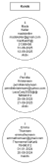
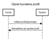
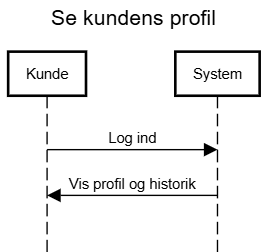
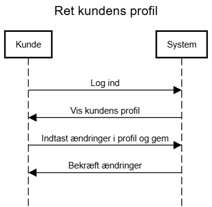
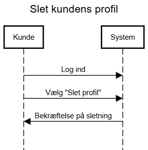
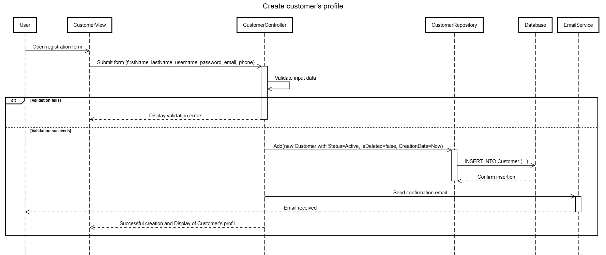
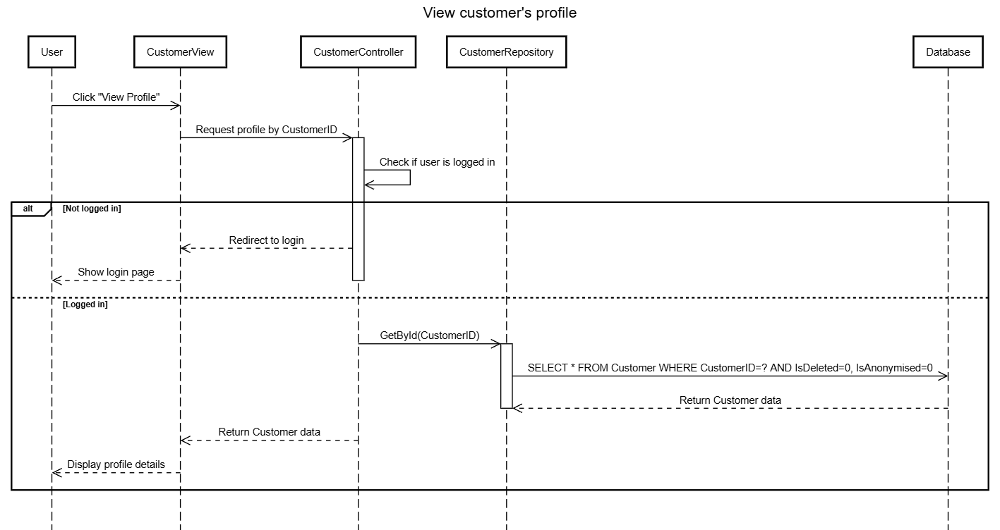
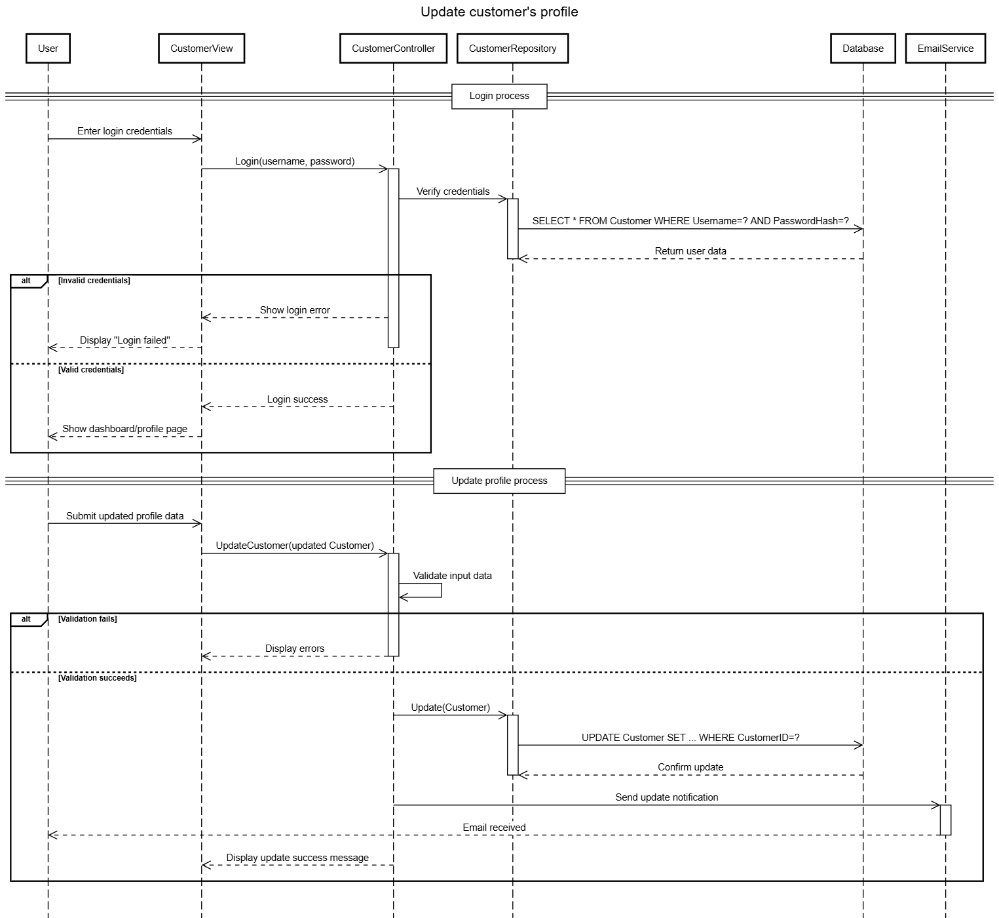
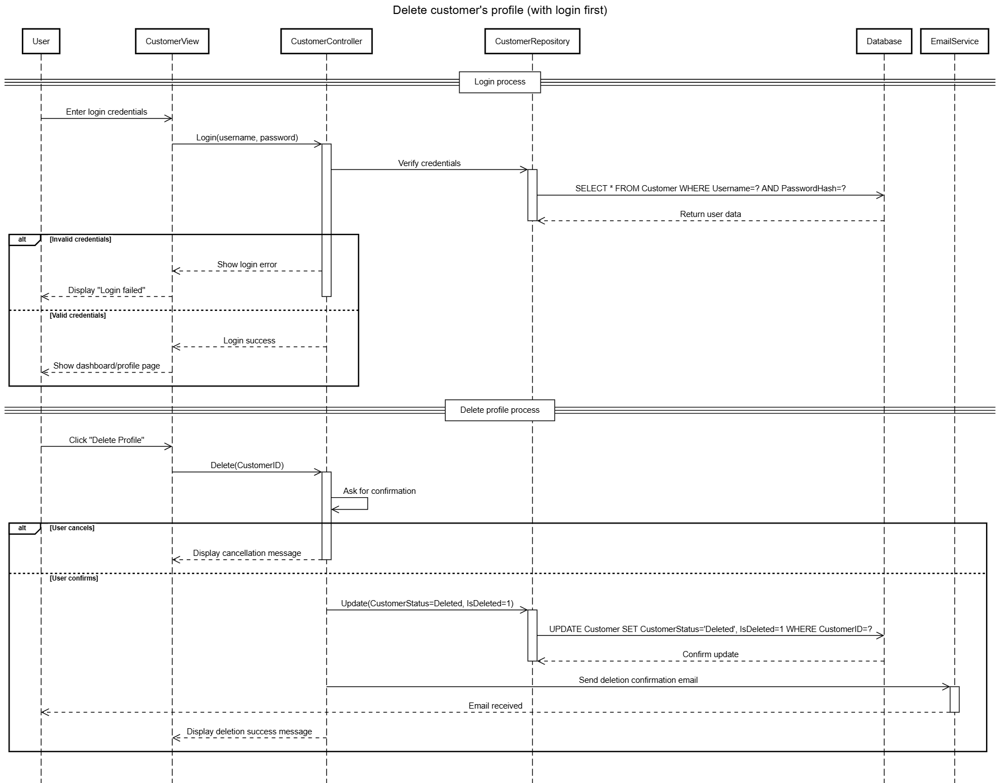

"Lazy Catz" er en kommende kattecafé i Danmark, som kombinerer fysisk cafémiljø med moderne
digitale løsninger. Gæster kan nyde mad og drikke i selskab med katte og lære om dyrevelfærd,
adoption og ansvar. Caféen har ambitioner om at bruge teknologi aktivt til at forbedre kundeoplevelsen
og sikre kattenes trivsel. Folk kan nyde mad og drikke separat, og så kan de købe adgang til
katterummene.
Problemstilling
Hvordan kan vi udvikle en digital løsning, der både understøtter kundeoplevelsen og dyrevelfærd i en
kattecafé? Vi ønsker at undersøge, hvordan teknologi (hjemmeside) kan
anvendes til booking, information om kattene og interaktion i caféen.
Teknisk Fokus
I dette projekt vil vi have fokus på at arbejde med:
Webudvikling
Backend og database (katteprofiler, bookingsystem, brugerdata, beskyttelse af data og Cyber training test)
ChatBot med et intelligent bookingsystem
Lazy Catz Business Model Canvas
Kundeprofil CRUD
Use Case 2: Kundens CRUD-operationer – Create, Read, Update, Delete
2.1 Opret kundens profil
Kunden åbner Lazy Catz’s hjemmeside for at oprette sin profil. Kunden angiver sit navn, email, telefonnummer, brugernavn
og adgangskode til sin profil og opretter sin profil. En mail sendes til kundens email for at bekræfte registrering,
som kunden bekræfter – og nu er kunden registreret i Lazy Catz’s system.
Aktør: Kunde
Mål: At oprette en ny profil i Lazy Catz-systemet.
Præbetingelser
Kunden har adgang til Lazy Catz’s hjemmeside.
Hovedforløb
Kunden åbner Lazy Catz’s hjemmeside og vælger "Opret profil".
Systemet viser registreringsformular.
Kunden indtaster navn, email, telefon, brugernavn og adgangskode.
Systemet validerer inputdata, opretter kundeprofil i databasen og sender en bekræftelsesmail til kundens email.
Kunden klikker på linket i mailen for at bekræfte registreringen.
Systemet aktiverer kundens profil og viser en succesmeddelelse.
Alternativt forløb
Hvis email eller brugernavn allerede er registreret, viser systemet fejlbesked.
Hvis kunden ikke bekræfter inden for 24 timer, forbliver profilen inaktiv.
2.2 Se kundens profil
Kunden logger ind i sin profil på Lazy Catz’s hjemmeside og kan se oplysninger om sin profil samt
information om sine transaktioner.
Aktør: Kunde
Mål: At se sine profiloplysninger og historik.
Præbetingelser
Kunden er logget ind.
Hovedforløb
Kunden logger ind på hjemmesiden.
Systemet validerer login.
Systemet henter kundens profiloplysninger fra databasen samt bookinghistorik (transaktioner).
Systemet viser profil og historik til kunden.
2.3 Ret kundens profil
Kunden logger ind i sin profil på Lazy Catz’s hjemmeside og vælger at redigere sine oplysninger.
Kunden kan rette sit navn, email, telefonnummer, brugernavn og adgangskode. Efter ændringer er gjort,
får kunden en bekræftelse på, at ændringer er registreret. For sikkerhed skyld modtager kunden en mail,
hvis de ikke selv har foretaget ændringerne, og bedes kontakte Lazy Catz hurtigst muligt.
Aktør: Kunde
Mål: At ændre sine profiloplysninger.
Præbetingelser
Kunden er logget ind.
Hovedforløb
Kunden logger ind i sin profil og vælger "Rediger profil".
Systemet validerer de nye data og opdaterer kundens profil i databasen.
Systemet sender en mail om, at der er foretaget ændringer, og viser en bekræftelse til kunden.
Alternativt forløb
Hvis de nye data er ugyldige (fx email-format), viser systemet fejlbesked.
Hvis kunden ikke selv foretog ændringen, bør kunden kontakte support.
2.4 Slet kundens profil
Kunden logger ind i sin profil på Lazy Catz’s hjemmeside og vælger at slette sin profil.
Kunden får en bekræftelse både på hjemmesiden og via e-mail om, at profilen er slettet fra Lazy Catz’s system.
Aktør: Kunde
Mål: At slette sin profil permanent.
Præbetingelser
Kunden er logget ind.
Hovedforløb
Kunden logger ind og vælger "Slet profil".
Systemet beder om bekræftelse og advarer om permanent sletning.
Kunden bekræfter sletningen.
Systemet sletter persondata fra databasen eller anonymiserer data.
Systemet bevarer bookinghistorik i anonym form, hvis forretningsregler kræver statistik.
Systemet sender bekræftelsesmail.
Systemet logger sletningstidspunkt (slettetDato).
Systemet viser besked om, at profilen er slettet.
Alternativt forløb
Hvis kunden annullerer handlingen, sker der ingen ændring.
Hvis der opstår systemfejl, informeres kunden, og support kontaktes.
Artefakter
Objektmodel

Domænemodel
System Sekvens Diagram
SSD Opret kundens profil

SSD Se kundens profil

SSD Ret kundens profil

SSD Slet kundens profil

Operationskonkrakter
Sekvens Diagram
SD Create customer profile

SD View customer profile

SD Update customer profile

SD Delete customer profile

Design Class Diagram / Pakkediagram
ER Diagram
Billeder fra Programmet
Kunde CRUD - Model-Controllers-Data-Services-Views
Video demo
CRUD operationer som Administrator
CRUD operationer som Kunde
Sletning af kundens profile med Email notifikation og Anonymisering
Sprogmodel KittyChat
Use Case 3 - Brugeren kan kommunikere med chatbot KittyChat
Brugeren går ind på Lazy Catz’s hjemmeside og ser chatbotten KittyChat nederst på skærmen.
Brugeren starter en samtale med chatbotten for at få hjælp. KittyChat svarer i et venligt og informativt sprog
og kan hjælpe med flere typer forespørgsler — for eksempel at finde bookingmuligheder, åbningstider, eller
give links til katteadoption og velfærd.
Chatbotten kan desuden tjekke tilgængelige tider i databasen (tabel BOOKING) og foreslå ledige tider.
Hvis brugeren bekræfter et tidspunkt, registreres bookingen i databasen.
Detaljeret Use Case
Aktør: Bruger
Mål: At kommunikere med chatbotten for at få information eller foretage booking.
Præbetingelser
Brugeren er på Lazy Catz’s hjemmeside.
KittyChat er aktiv og forbundet til backend (API og database).
Hovedforløb
Brugeren åbner Lazy Catz’s hjemmeside.
Brugeren klikker på chat-ikonet for at starte en samtale med KittyChat.
KittyChat hilser brugeren med en velkomstbesked (fx “😺 Hej! Jeg er KittyChat. Hvordan kan jeg hjælpe dig i dag?”).
Brugeren stiller et spørgsmål, fx “Jeg vil gerne booke tid kl. 16.”